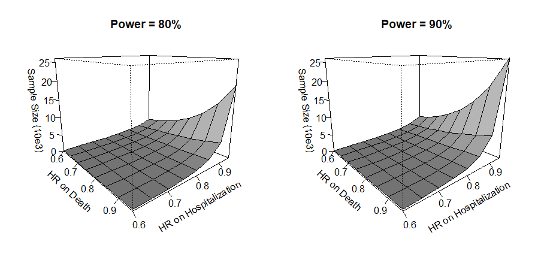

Chapter slides here. (To convert html to pdf, press E \(\to\) Print \(\to\) Destination: Save to pdf)
R code
Show the code
################################################################### This code generates the numerical results in chapter 2 #################################################################### load the survival packagelibrary(survival)# install and load the WR package for# 1. dataset hfaction_cpx9;# 2. function WRrec() for win ratio test (of recurrent events and death)# 3. functions base() and WRSS() for sample size calculation# install.packages("WR")library(WR)library(tidyverse) # for data wrangling (dplyr, ggplot2, etc.)##### Read in HF-ACTION DATA ######### same as rmt::hfaction used in chap 1 # (except for status coding)data(hfaction_cpx9)hfaction <- hfaction_cpx9head(hfaction)#> Shows the first few rows of hfaction_cpx9 dataset# count unique patients in each armhfaction |>group_by(trt_ab) |>distinct(patid) |>count(trt_ab)#> This gives the number of unique patients (patid) by treatment arm (trt_ab)#### demo ############# WRrec() fits the recurrent event plus death model (Win Ratio approach)obj <-WRrec(ID = hfaction$patid,time = hfaction$time,status = hfaction$status,trt = hfaction$trt_ab,strata = hfaction$age60,naive =TRUE)# summary resultsobj#> Displays the main results, including win ratio estimates for each method.# LWRbeta <- obj$log.WR # log-win ratio for LWRse <- obj$se # standard error for log-win ratio (LWR)# testpval <-2* (1-pnorm(abs(beta / se)))pval#> Two-sided p-value for LWR# NWRbeta.naive <- obj$log.WR.naive # log-win ratio for naive WR (NWR)se.naive <- obj$se.naive # its standard error# testpval.naive <-2* (1-pnorm(abs(beta.naive / se.naive)))pval.naive#> Two-sided p-value for NWR# FWRbeta.FI <- obj$log.WR.FI # log-win ratio for Fisher’s information-based WR (FWR)se.FI <- obj$se.FI # standard error for log(FWR)# testpval.FI <-2* (1-pnorm(abs(beta.FI / se.FI)))pval.FI#> Two-sided p-value for FWR################################## Win ratio analyses: tabulate ##################################data <- hfaction ### create a dataset with only the first hospitalization -> data.H1# hospitalization datatmpH <- data[data$status ==2, ]# get the first record of each ido <-order(tmpH$patid, tmpH$time)tmpH <- tmpH[o, ]tmpFH <- tmpH[!duplicated(tmpH$patid), ]# combine it with mortality datadata.H1 <-rbind(tmpFH, data[data$status !=2, ])o <-order(data.H1$patid, data.H1$time)data.H1 <- data.H1[o, ]# Function to create a summary table for# PWR, NWR, FWR, and LWR with their 95% CI and p-values# ind: index (logical) for rows in the main 'data'# ind1: index (logical) for rows in 'data.H1'# r: number of decimals for rounding in the outputgwr.fun =function(ind, ind1, r =2) {# fit NWR, FWR, and LWR to original data (multiple events) obj <-WRrec(ID = data$patid[ind],time = data$time[ind],status = data$status[ind],trt = data$trt_ab[ind],strata = data$age60[ind],naive =TRUE )# fit sWR (PWR) to dataset with first hospitalization only# This typically addresses "semi-competing" event structure obj1 <-WRrec(ID = data.H1$patid[ind1],time = data.H1$time[ind1],status = data.H1$status[ind1],trt = data.H1$trt_ab[ind1],strata = data.H1$age60[ind1],naive =FALSE )# critical value for a 95% confidence interval za <-qnorm(0.975)## LWR results beta <- obj$log.WR se <- obj$se theta <- obj$theta # proportion of pairwise comparisons that are wins/losses# Format: percentage of wins, percentage of losses, # win ratio & 95% CI, p-value r4 <-c(paste0(round(100* theta[1], 1), "%"), # Winpaste0(round(100* theta[2], 1), "%"), # Losspaste0(round(exp(beta), r), " (",round(exp(beta - za * se), r), ", ",round(exp(beta + za * se), r), ")" ),round(1-pchisq((beta / se)^2, 1), 3) )## PWR results beta1 <- obj1$log.WR se1 <- obj1$se theta1 <- obj1$theta r1 <-c(paste0(round(100* theta1[1], 1), "%"),paste0(round(100* theta1[2], 1), "%"),paste0(round(exp(beta1), r), " (",round(exp(beta1 - za * se1), r), ", ",round(exp(beta1 + za * se1), r), ")" ),round(1-pchisq((beta1 / se1)^2, 1), 3) )## NWR results beta.naive <- obj$log.WR.naive se.naive <- obj$se.naive theta.naive <- obj$theta.naive r2 <-c(paste0(round(100* theta.naive[1], 1), "%"),paste0(round(100* theta.naive[2], 1), "%"),paste0(round(exp(beta.naive), r), " (",round(exp(beta.naive - za * se.naive), r), ", ",round(exp(beta.naive + za * se.naive), r), ")" ),round(1-pchisq((beta.naive / se.naive)^2, 1), 3) )## FWR results beta.FI <- obj$log.WR.FI se.FI <- obj$se.FI theta.FI <- obj$theta.FI r3 <-c(paste0(round(100* theta.FI[1], 1), "%"),paste0(round(100* theta.FI[2], 1), "%"),paste0(round(exp(beta.FI), r), " (",round(exp(beta.FI - za * se.FI), r), ", ",round(exp(beta.FI + za * se.FI), r), ")" ),round(1-pchisq((beta.FI / se.FI)^2, 1), 3) )# Combine rows into a single table result <-rbind(r1, r2, r3, r4)rownames(result) <-c("PWR", "NWR", "FWR", "LWR")return(result)}# Create table## Age <= 60 yearsind <- (data$age60 ==0)ind1 <- (data.H1$age60 ==0)result.lt60 <-gwr.fun(ind, ind1, r =2)## Age > 60 yearsind <- (data$age60 ==1)ind1 <- (data.H1$age60 ==1)result.ge60 <-gwr.fun(ind, ind1, r =2)## overallind <-rep(TRUE, nrow(data))ind1 <-rep(TRUE, nrow(data.H1))result.all <-gwr.fun(ind, ind1, r =2)# combine results results <-rbind(result.lt60, result.ge60, result.all)colnames(results) <-c("Win", "Loss", "Win ratio (95% CI)", "p-value")noquote(results)#> Final table of all 4 measures (PWR, NWR, FWR, LWR) across strata.############################################################################# Sample size calculation # ############################################################################# get training arm datapilot <- hfaction |>filter(trt_ab ==1)# number of subjectspilot |>distinct(patid) |>count()#> This indicates how many unique subjects were in the training arm############## estimate parameters ############### Get the variables from pilot dataset# to estimate baseline parameters # lambda_D, lambda_H, kappaoutcome_base <-gumbel.est(pilot$patid, pilot$time /12, pilot$status)lambda_D <- outcome_base$lambda_Dlambda_H <- outcome_base$lambda_Hkappa <- outcome_base$kappalambda_Dlambda_Hkappa#> Baseline hazards for death/hospitalization and the gumbel 'kappa' parameter## Kendall's rank correlation1-1/kappa#> [1] 0.360812#> This measures correlation between timing of repeated events### demo #################### set design parameterstau_b <-3# time from baseline to start of follow-up for base() computationtau <-4# total follow-up (in years)lambda_L <-0.01# Additional parameter used in the base() function# use base() function to compute zeta2 and delta## may take up to 30sbparam <-base(lambda_D, lambda_H, kappa, tau_b, tau, lambda_L)#> bparam includes the baseline rates and distribution shape #> used for sample size calculations# compute sample size under HRs 0.8 and 0.9# for death and nonfatal event, respectivelyobj <-WRSS(xi =log(c(0.9, 0.8)),bparam = bparam,q =0.5,alpha =0.05,power =0.8)obj$n#> The required sample size for the given HRs at 80% power## effect size specificationthetaD <-seq(0.6, 0.95, by =0.05) # hazard ratio for deaththetaH <-seq(0.6, 0.95, by =0.05) # hazard ratio for hospitalization## create a matrix "SS08" for sample size powered at 80% ## under each combination of thetaD and thetaHmD <-length(thetaD)mH <-length(thetaH)SS08 <-matrix(NA, mD, mH)rownames(SS08) <- thetaDcolnames(SS08) <- thetaH## fill in the computed sample size valuesfor (i in1:mD) {for (j in1:mH) {## sample size under hazard ratios thetaD[i] for death ## and thetaH[j] for hospitalization SS08[i, j] <-WRSS(xi =log(c(thetaD[i], thetaH[j])),bparam = bparam,q =0.5,alpha =0.05,power =0.8 )$n }}## print the calculated sample sizesprint(SS08)#> Shows how sample size changes under different hazard ratios for death/hosp## repeating the same calculation for power = 90%SS09 <-matrix(NA, mD, mH)rownames(SS09) <- thetaDcolnames(SS09) <-thetaH # As in original code; sets the colnames to the sequence of thetaH## fill in the computed sample size valuesfor (i in1:mD) {for (j in1:mH) {## sample size under hazard ratios thetaD[i] for death ## and thetaH[j] for hospitalization SS09[i, j] <-WRSS(xi =log(c(thetaD[i], thetaH[j])),bparam = bparam,q =0.5,alpha =0.05,power =0.9 )$n }}## print the calculated sample sizesprint(SS09)#> Sample sizes under 90% power requirementsoldpar <-par(mfrow =par("mfrow"))par(mfrow =c(1, 2))persp( thetaD, thetaH, SS08 /1000,theta =50, phi =15, expand =0.8, col ="gray",ltheta =180, lphi =180, shade =0.75,ticktype ="detailed",xlab ="\n HR on Death", ylab ="\n HR on Hospitalization",zlab =paste0("\n Sample Size (10e3)"),main ="Power = 80%",zlim =c(0, 26))#> 3D perspective plot of sample size (in thousands) for power=80% #> over various hazard ratios for death/hosppersp( thetaD, thetaH, SS09 /1000,theta =50, phi =15, expand =0.8, col ="gray",ltheta =180, lphi =180, shade =0.75,ticktype ="detailed",xlab ="\nHR on Death", ylab ="\nHR on Hospitalization",zlab =paste0("\n Sample Size (10e3)"),main ="Power = 90%",zlim =c(0, 26))#> Similar 3D perspective for power=90%
The win ratio (WR) is a pairwise, nonparametric method for comparing composite outcomes in a prioritized manner. Each subject in the treatment arm is compared to each subject in the control arm over a shared follow-up window. A win is declared if the treated subject experiences a better outcome—typically defined as longer survival or, if tied on survival, fewer or later nonfatal events.
Formally, let \(D_i^{(a)}, T_i^{(a)}, C_i^{(a)}\) denote survival, hospitalization, censoring times on \(i\)th subject in group \(a\)\((i=1,\ldots, N_a; a= 1, 0)\). Then the win fraction for group \(a\) versus \(1-a\) is \[
\hat w^{(a, 1-a)} = \frac{1}{N_1N_0} \sum_{i=1}^{N_a} \sum_{j=1}^{N_{1-a}} \hat w^{(a, 1-a)}_{ij},
\] where \[\begin{align}
\hat w^{(a, 1-a)}_{ij}&= \underbrace{I(D_j^{(1-a)}< D_i^{(a)}\wedge C_i^{(a)}\wedge C_j^{(1-a)})}_{\mbox{win on survival}}\\
& + \underbrace{I(\min(D_i^{(a)}, D_j^{(1-a)}) > C_i^{(a)}\wedge C_j^{(1-a)}, T_j^{(1-a)}< T_i^{(a)}\wedge C_i^{(1)}\wedge C_j^{(0)})}_{\mbox{tie on survival, win on hospitalization}}
\end{align}\]
The win ratio statistic is defined as \[
\text{WR} = \frac{\hat w^{(1, 0)}}{\hat w^{(0, 1)}}.
\]
Alternative summaries include the net benefit (proportion in favor) and the win odds, which account for ties and interpret the WR on a log-odds scale. In the special case of binary outcomes, the WR reduces to the odds ratio, and the net benefit corresponds to the risk difference.
2.2 Hypothesis Testing and Interpretation
Statistical inference for the WR is based on the asymptotic normality of the log win ratio: \[
S_n = \frac{\sqrt{n} \log(\hat w_{1,0} / \hat w_{0,1})}{\hat{\rm SE}} \sim N(0, 1),
\] under the null hypothesis that treatment and control are equally effective. The standard error \(\hat{\rm SE}\) is calculated via \(U\)-statistics, and the null corresponds to equal bivariate survival functions \(H^{(1)}(s, t) = H^{(0)}(s, t)\) for all \(t \le s\).
The alternative hypothesis assumes that the probability of a treatment win exceeds that of a control win at all times. A sufficient condition is that the joint distribution of death and nonfatal events under treatment is stochastically larger than under control.
2.3 Extensions and Variants
Several extensions of the WR improve its flexibility and robustness. Weighted comparisons allow later follow-up times to contribute more to the test statistic, leading to log-rank-type weights. Stratified WR methods compare subjects within strata to adjust for confounding and increase efficiency.
2.4 Generalization to Recurrent Events
When subjects experience multiple nonfatal events, a generalized WR can be defined using a win function \(\mathcal{W}(\cdot, \cdot)(t)\) that compares event histories up to time \(t\). The generalized win ratio statistic becomes \[
\hat{\mathcal E}_n(\mathcal W) = \frac{\sum \mathcal W(\mathcal H^{*(1)}_i, \mathcal H^{*(0)}_j)}
{\sum \mathcal W(\mathcal H^{*(0)}_j, \mathcal H^{*(1)}_i)},
\] where comparisons are made up to the minimum of each pair’s observed follow-up time.
Three versions of recurrent-event win functions are commonly used:
Naive WR: prioritize death, then total number of events
First-event WR: further prioritize time to first event
Last-event WR: further prioritize time to last event
All versions enforce a win/loss/tie rule based on observable history, and guarantee that win status is unchanged after death. Among them, the last-event WR (LWR) has shown superior power in simulation studies due to fewer ties and better separation between subjects.
2.5 HF-ACTION Example
In the HF-ACTION trial, recurrent-event WR methods were applied to a high-risk subgroup of 426 patients. Compared to usual care, exercise training reduced both mortality and hospitalizations. The last-event WR was estimated as 1.32 (95% CI: 1.05–1.66, p = 0.019), with similar results from first-event and naive WRs.
These results illustrate that recurrent-event WRs detect benefits more effectively than traditional time-to-first-event WRs, especially when the number and timing of nonfatal events vary widely across subjects.
2.6 Sample Size Calculation
Sample size calculation for WR is based on a joint model for death and nonfatal events. Under a Gumbel–Hougaard copula model, the joint survival function is \[
\pr(D^\a>s, T_1^\a>t) = \exp\left(-\left[\{\exp(a\xi_D)\lambda_Ds\}^\kappa + \{\exp(a\xi_H)\lambda_Ht\}^\kappa \right]^{1/\kappa}\right)
\] where \(\lambda_D^a\) and \(\lambda_H^a\) are arm-specific baseline hazard rates and \(\kappa\) controls the dependence between outcomes.
The required sample size is \[
n = \frac{\zeta_0^2(z_{1-\alpha/2} + z_\gamma)^2}{q(1-q)\delta^\top \xi},
\] where:
\(\zeta_0^2\) is the variance of the test statistic under the null,
\(\delta\) is the sensitivity of the log-WR to changes in log-HRs \(\xi\),
\(q\) is the treatment allocation proportion.
Design parameters include the accrual duration \(\tau_b\), total follow-up time \(\tau\), and a random loss-to-follow-up rate \(\lambda_L\).
2.7 HF-ACTION: Planning a New Trial
Using HF-ACTION training arm data as historical reference, the estimated baseline rates were:
\(\lambda_D = 0.073\) deaths/year
\(\lambda_H = 0.56\) hospitalizations/year
Kendall’s correlation = 36.1%
Assuming HRs of 0.9 (death) and 0.8 (hospitalization), and minimal loss to follow-up, the sample size required for 80% power is approximately \(n = 1241\).

2.8 Example R code
The following example uses a data frame df in long format with columns:
######################################### 1. WR test for recurrent events########################################library(WR)obj <-WRrec(ID = df$id, time = df$time, status = df$status, trt = df$trt, strata = df$strata, naive =TRUE)# Extract log win ratio and standard errorobj$log.WRobj$seprint(obj)######################################### 2. Sample size calculation######################################### Step 1: Estimate baseline outcome parametersbase_est <-gumbel.est(id = df$id, time = df$time, status = df$status)# Step 2: Design-specific noise and signalbparam <-base(lambda_D = base_est$lambda_D,lambda_H = base_est$lambda_H,kappa = base_est$kappa,tau_c =3, tau =4, lambda_L =0.001)# Step 3: Required sample size for given effect sizesWRSS(xi =log(c(0.9, 0.8)), bparam = bparam, q =0.5, power =0.8)$n
2.9 Conclusion
The win ratio test provides a clinically meaningful and statistically valid method for analyzing prioritized composite outcomes. By extending to recurrent events and general win functions, the WR accommodates complex patient trajectories while preserving interpretability. Among several extensions, the last-event WR offers strong separation and improved power in trials with repeated nonfatal events.
Sample size formulas grounded in copula models enable principled trial design. The WR package supports both estimation and power analysis, facilitating the broader adoption of win-based strategies in modern clinical research.